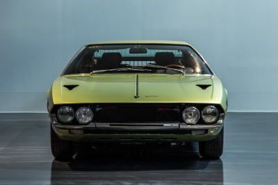

|  |
Lamborghini Espada
|
The Lamborghini Espada is a grand tourer produced by the Italian automaker Lamborghini between 1968 and 1978. It was designed by Marcello Gandini of the Italian design house Bertone and was intended to be a more practical and spacious alternative to Lamborghini's more extreme sports cars, such as the Miura and the Countach.
The Espada features a front-engine layout and is powered by a naturally aspirated 4.0-liter V12 engine, which produced between 325 and 350 horsepower depending on the specific model. It was available with a manual or automatic transmission.
The Espada's exterior design was characterized by a long hood, a sloping rear end, and a four-seat layout that was unusual for a Lamborghini at the time. The interior was spacious and luxurious, with high-quality materials and a focus on comfort and convenience.
The Espada was designed to be a fast and comfortable grand tourer that could be used for long-distance driving and daily use, and it was a popular choice among wealthy customers who wanted a more practical and versatile Lamborghini.
Although it was not as well-known or influential as some of Lamborghini's other models, such as the Miura and the Countach, the Espada is still considered to be an important part of the brand's history and a unique and interesting car in its own right.